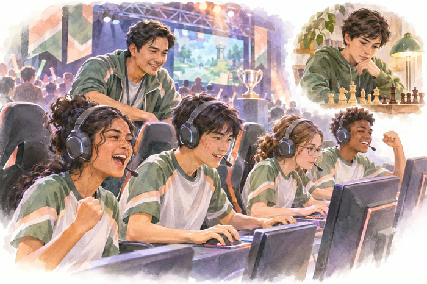

Listen to the text
Speed:

Twenty years ago parents said, "Stop playing and go outside." Today some players fill stadiums. Competitive video gaming, or e-sports, has become one of the fastest-growing kinds of entertainment in the world. An e-sports tournament looks like a big sports final. Teams of five sit at computers on a stage. Their game is shown on huge screens, and commentators explain every move. Thousands of fans watch in the arena, and millions more follow online. The number of viewers has increased every year, and the prize money at the biggest tournaments is counted in millions of dollars. At this rate, some experts say, the audience of e-sports will soon be larger than the audience of many traditional sports. Ukraine is well known in this world. Ukrainian teams and players have won some of the most important international tournaments, and several of them are called the best in history by fans. But is e-sport really a sport? People have argued about it for years. Those who say "yes" give several reasons. A professional gamer trains six to eight hours a day. He or she needs fast reactions, perfect concentration and teamwork. The best players make hundreds of actions per minute. Teams have coaches, analysts and even psychologists. And the pressure in a final is the same as in a football match. Those who say "no" answer that a sport must train the body. A gamer sits on a chair for hours, and that is not healthy. Doctors warn about problems with eyes, backs and wrists. A career in e-sports is also very short: many players stop at twenty-five, because their reactions become slower. The gamers themselves have learnt this lesson. Today serious teams include running, swimming and gym training in their timetable. "If your body is tired, your brain is slow," says a seventeen-year-old player from Kyiv. "I go to the pool four times a week. My mother still can't believe it." So, is it a sport? Maybe the name is not so important. Chess players sit on chairs too, and nobody tells them to go outside. One thing is clear: a tournament is won by those who train, not by those who just play.
Tap any sentence to hear it again.
Сподобалось? На сайті ще більше матеріалів для вчителів!
Reader, презентації, ігри, діагностичні та контрольні роботи до підручників 1-11 класів.
Перейти на сайт materials.allaenglish.com